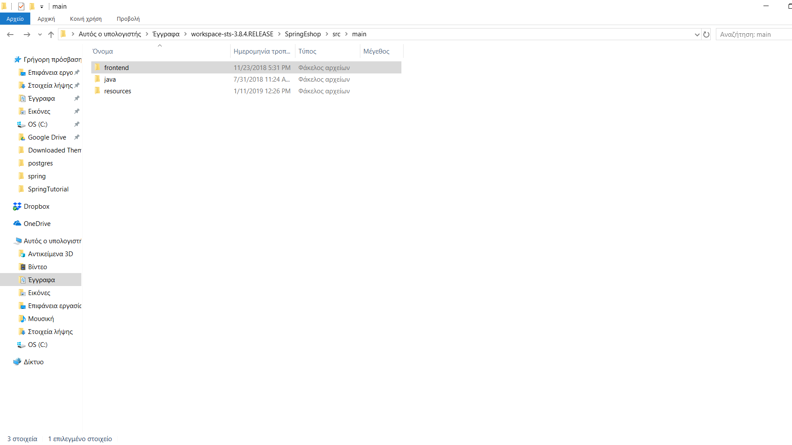

Δημιουργία Frontend
Προαπαιτούμενα
Για να δημιουργήσουμε την Angular εφαρμογή, χρειαζόμαστε το Node.js και τον npm package manager. Η Angular χρειάζεται τις εκδόσεις 8.x ή 10.Χ. Εάν δεν έχετε εγκατεστημένο το Node.js, μπορείτε να το κατεβάσετε εδώ.
- Για να ελέγξουμε την έκδοση του Node.js, τρέχουμε την εντολή node -v σε ένα terminal window.
- Για να ελέγξουμε την έκδοση του npm, τρέχουμε την εντολή npm -v σε ένα terminal window.
Εγκατάσταση του Angular CLI
Με το Angular CLI μπορούμε, να δημιουργήσουμε projects και να παράγουμε αυτόματα κώδικα της εφαρμογής όπως compoments. Για να το εγκαταστήσουμε, πληκτρολογούμε την ακόλουθη εντολή στο terminal window.
npm install -g @angular/cli
Δημιουργία workspace και αρχικής εφαρμογής
Για να δημιουργήσουμε την εφαρμογή , πηγαίνουμε στο φάκελο, τον οποίο επιθυμούμε με την εντολή cd και πληκτρολογούμε την ακόλουθη εντολή στο terminal window.
ng new frontend
Τo Angular CLI εγκαθιστά τα απαραίτητα npm packages και dependencies. Δημιουργεί επίσης τα ακόλουθα workspace και starter project αρχεία :
- Ένα καινούριο workspace, με ένα root φάκελο frontend.
- Τον σκελετό ενός app project, που λέγεται επίσης frontend (στον υποφάκελο src).
- Ένα end-to-end test project(στον υποφάκελο e2e)
- Τα σχετικά configuration files.

Εκκίνηση εφαρμογής
Η Angular συμπεριλαμβάνει και ένα server, οπότε μπορούμε να τρέξουμε την εφαρμογή τοπικά.
- Πηγαίνουμε στον φάκελο-workspace frontend
- Εκκινούμε τον server, με την εντολή ng serve --open
cd frontend
ng serve --open

Εγκατάσταση βιβλιοθηκών
Θα εγκαταστήσουμε τις βιβλιοθήκες jQuery, popper.js και Bootstrap, με τις ακόλουθες εντολές :
npm install popper.js --save
npm install jquery --save
npm install bootstrap --save
npm install @fortawesome/fontawesome-free --save
Για να μπορέσουμε, να τις χρησιμοποιήσουμε, πρέπει να αλλάξουμε το αρχείο angular.json . Πρέπει να αλλάξουμε τα properties styles και scripts, όπως δίνεται παρακάτω :
"styles": [
"node_modules/bootstrap/dist/css/bootstrap.min.css",
"node_modules/@fortawesome/fontawesome-free/css/all.min.css",
"src/styles.css"
],
"scripts": [
"node_modules/jquery/dist/jquery.min.js",
"node_modules/popper.js/dist/umd/popper.min.js",
"node_modules/bootstrap/dist/js/bootstrap.min.js"
]
Ενσωμάτωση με το Spring
Αυτή τη στιγμή, η Spring Boot εφαρμογή τρέχει στο localhost:8080, ενώ η Angular εφαρμογή τρέχει στο localhost:4200. Θα ήταν πιο βολικό, να τις ενώσουμε σε μία εφαρμογή.
Αρχικά, θα δημιουργήσουμε ένα αρχείο proxy-conf.json στο φάκελο frontend, ώστε να μπορεί η Angular να κάνει επικοινωνεί με το API του Spring Boot στο http://localhost:8080/api, αντί για το http://localhost:4200/api/.
{
"/api": {
"target": "http://localhost:8080",
"secure": false
}
}
Θα τροποποιήσουμε το αρχείο package.json αντίστοιχα:
"scripts":{
...
"start": "ng serve --proxy-config proxy-conf.json",
...
}
Μετά, θα χρειαστεί, να εγκαταστήσουμε κάποια πακέτα ακόμα:
npm install --save-dev rimraf
npm install --save-dev mkdirp
npm install --save-dev copyfiles
Θέλουμε όταν κάνουμε build την Angular εφαρμογή, το Webpack να κάνει bundle τα assets και να τα τοποθετεί στο φάκελο /resources/static της Spring Boot εφαρμογής. Για να γίνει αυτό, τροποποιούμε το package.json, προσθέτοντας τα ακόλουθα μετά το scripts.build:
"postbuild": "npm run deploy",
"predeploy": "rimraf ../resources/static/ && mkdirp ../resources/static",
"deploy": "copyfiles -f dist/** ../resources/static",
Η εντολή rimraf ψάχνει τον φάκελο ../resources/static/ και δημιουργεί έναν καινούριο(ουσιαστικά τον καθαρίζει), ενώ η εντολή copyfiles αντιγράφει τα αρχεία από τον distribution φάκελο της Angular στον static φάκελο. Για να λειτουργήσει όλο αυτό, πρέπει να τοποθετήσουμε το φάκελο-workspace της Angular στο φάκελο src/main της Spring Boot εφαρμογής. Στο συγκεκριμένο παράδειγμα, ο φάκελος βρίσκεται στο C:\Users\Kostas\Documents\workspace-sts-3.8.4.RELEASE\SpringEshop\src\main . 
Όταν θέλουμε, να κάνουμε κάποια αλλαγή στην Angular, τρέχουμε την εντολή npm run build, η οποία τρέχει τις προηγούμενες εντολές και το τελικό αποτέλεσμα είναι η packaged εφαρμογή στον φάκελο /resources/static. Έτσι, όταν τρέχουμε την Spring Boot εφαρμογή στην πόρτα 8080, μπορούμε να χρησιμοποιήσουμε την Angular εφαρμογή.
cd C:\Users\Kostas\Documents\workspace-sts-3.8.4.RELEASE\SpringEshop\src\main\frontend
npm run build